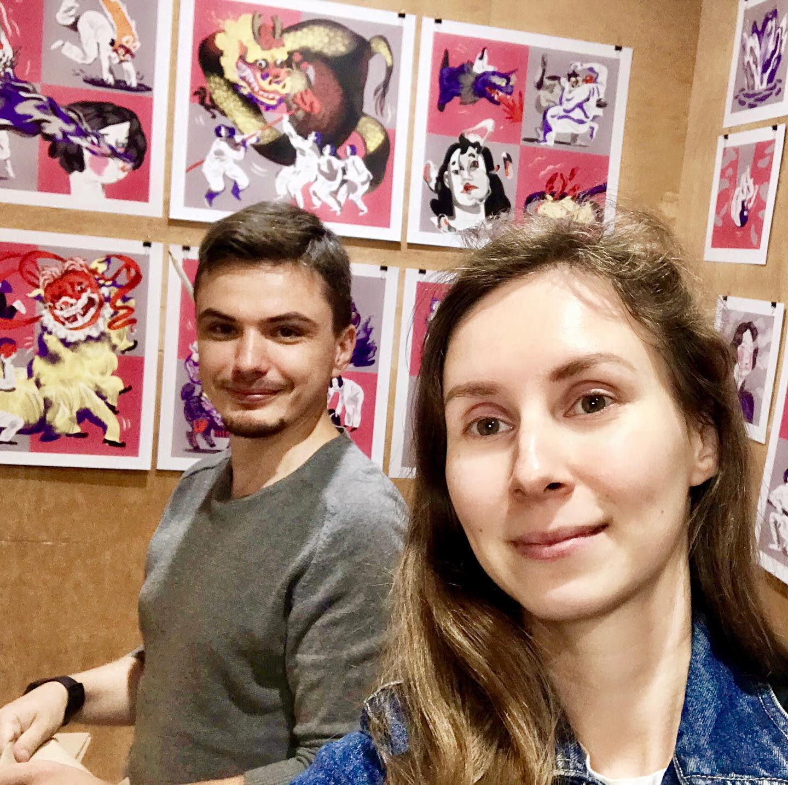
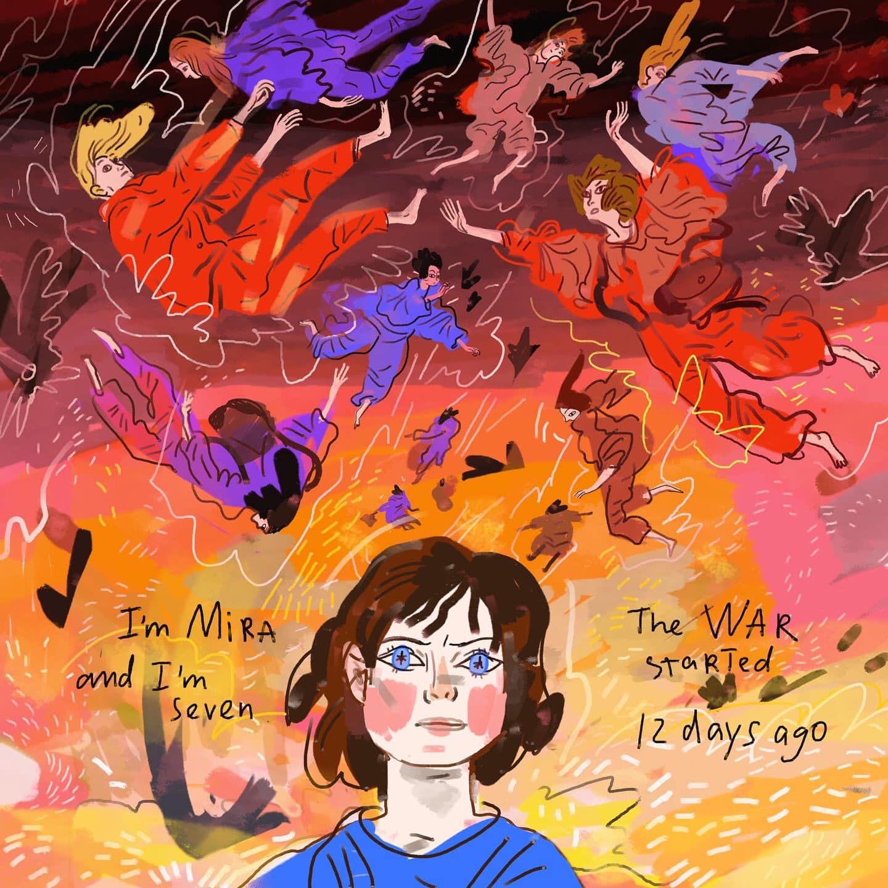
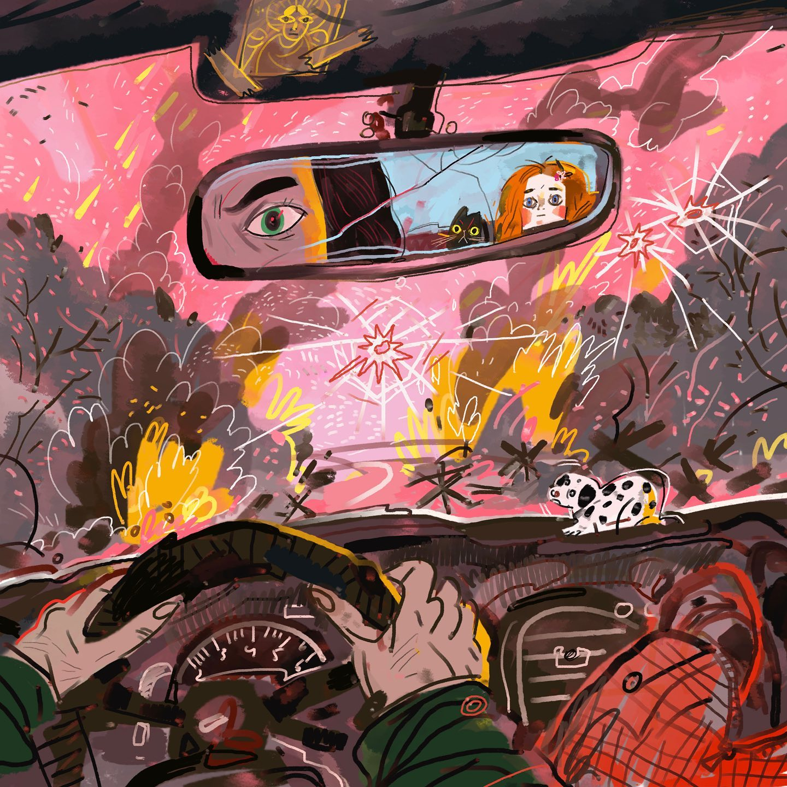
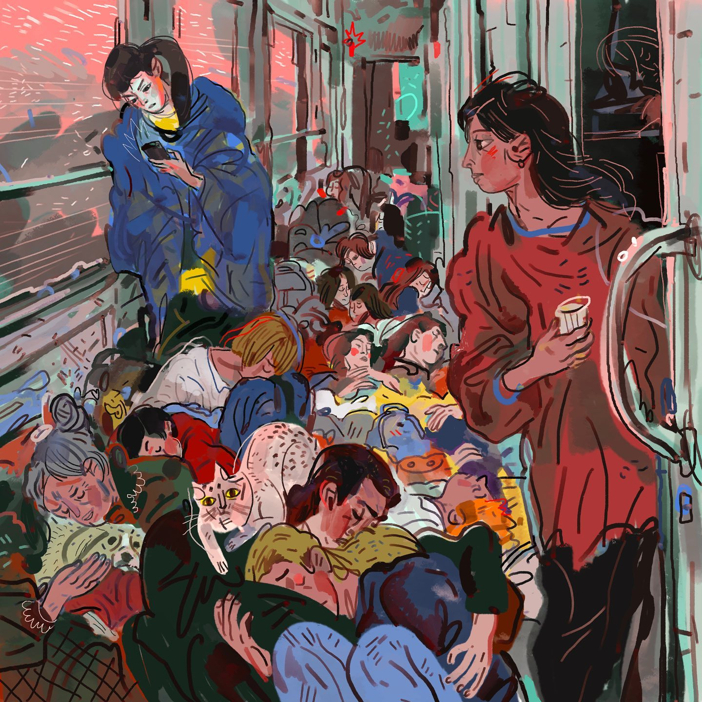
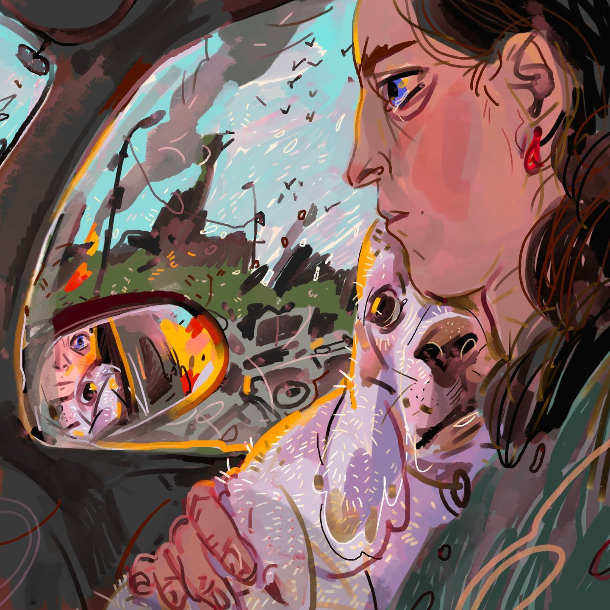
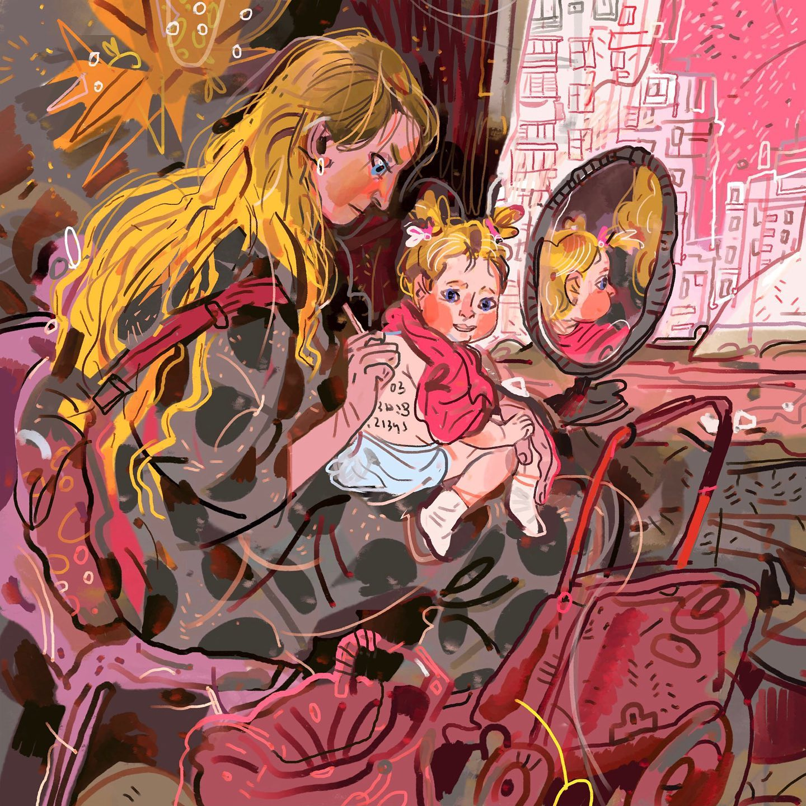

<!DOCTYPE html>
<html>
  <head> </head>
  <body>
    <!-- Write your HTML in this file! -->
  </body>
</html>

<!DOCTYPE html>
<html>
  <head>
    <link rel="stylesheet" href="styles.css" />
  </head>
  <body>
    <header>
      <h1 id="mainHeading">Ukrainian Artist's War Diary</h1>
    </header>

    <main>
      <section id="about-artist">
        <h2>About the Artist</h2>
        
        <p>
          Julia Tveritina is an artist from Ukraine who is currrently living in
          China.
        </p>
      </section>

      <section id="war-diary">
        <h2>War Diary</h2>

        <article class="diary-entry">
          <h3>March 8, 2022</h3>
          
          <p>
            Somewhere at the beginning of the war (only a week ago) I had
            telephone discussion with Miroslava, the seven-year-old my close
            friend’s daughter, from Irpin. Then I started drawing this graphic
            story about her but couldn't finish it. Every day, reading the posts
            of my friends and relatives stuck in the destroyed cities in
            basements and bomb shelters, short trembling messages from my mom in
            Kyiv, I wanted to add darker details to the story, but finally I
            didn’t. I’m mentally tired. I’m just believe they all will survive.
            And there is small good news - the cat of Mira's neighbors was
            finally rescued. 11 days later, a hole was punched in the wall of
            the common corridor and poor creature got out.<br /><br />
          </p>
        </article>

        <article class="diary-entry">
          <h3>March 28, 2022</h3>
          
          <p>
            33th day of war. People who survived and evacuated begin to tell
            their stories. The fired thing is that a part of them are my friends
            and acquaintances, I know these families personally. I started to
            keep such a diary in pictures, dedicated to these people. I want
            Facebook to remind me of these posts later, when the war is over. to
            never forget.<br /><br />

            March 6, 2022, my brave friend Masha takes her daughter Veronika out
            of Irpin , in a half-broken car that was shot earlier in the yard of
            their destroyed house. It was the first days of the war, a lot of
            civilians from Irpin, Bucha and Gostomel tried to leave and escape,
            but not everyone was lucky. entire families were shot, no one looked
            that the word "children" was written on the cars. <br /><br />

            March 15, 2022 . My other close friend Julia finally answered my
            message and said that she had already been evacuated from Bucha to
            Kyiv. "Our entire park zone is covered in huge black holes - traces
            of the bombing. I have nowhere else to walk my dog. A shell hit my
            house - I have nowhere else to live."<br /><br />
          </p>
        </article>

        <article class="diary-entry">
          <h3>March 31, 2022</h3>
          
          <p>
            36th day of the war with a few words about evacuation. None of my
            family left Kyiv during the war , but I can imagine how deafeningly
            scary it is when you suddenly find yourself at the train station
            with a small bag in your hand, in which there are your passport,
            some food and maybe pair of socks and no return ticket.<br /><br />

            March 10, 2022. My friends, newlyweds Sergiy and Lena say goodbye at
            the railway station in Kyiv. Lena is pregnant and leaves with the
            hope of waiting out the war in Lviv. Her husband leaves for the
            front line. Sergiy is a very peace-loving calm man, he is big fan of
            tea culture and writes essays on oriental studies. The last thing
            Sergiy wants to do is fight, but he has no choice today, if he wants
            his former life back, like all of us.<br /><br />

            March 11 , 2022. exhausted people sleep on the floor of the
            Poltava-Lviv evacuation train.
          </p>
        </article>

        <article class="diary-entry">
          <h3>April 4, 2022</h3>
          
          <p>
            40-th day of war. As I wrote earlier, I started a small series of
            illustrations about the war ,based on the real stories of my
            eyewitness friends. These are stories of ordinary people who woke up
            on February 24th in a “new wonderful world” in which other people
            want to forcefully and irrevocably change theirs lives.
            <br /><br />March 4th, 2022. Kharkiv city . The children sleep in a
            basement, on the earthen floor. <br /><br />April 3. 2022, Bucha. my
            childhood friend Andrew looks at the river through a hole in the
            bridge, which he passed thousands of times to visit grandparents in
            his pre-war life. This bridge is covered with burnt cars and civil
            dead bodies now. It's hard for me to write anything objective about
            Bucha , because I knew this region too well. I can only say that I
            feel the same hole inside right now. <br /><br />March 19, 2022. my
            friend Lera from Mariupol. Her father and granny died because of
            shrapnel wounds in the yard of their own house when they left the
            basement to found some food. She was evacuated from the Marine
            Boulevard area along with a dog that she picked up along the way. As
            a result of shelling, 90% of the housing stock was damaged in the
            city. Mariupol no longer exists.
          </p>
        </article>

        <article class="diary-entry">
          <h3>April 7, 2022</h3>
          
          <p>
            I don’t remember which day of the war, it seems to be the 43rd. I
            continue illustration series of stories of my friends. The good news
            is that my dog ​​has finally gotten used to the sounds of exploding
            shells and alarms, and furiously barking back now. and of course,
            the very good news is that the front has moved away from Kyiv for a
            little bit , and the dog has nothing to bark at. I don't know for
            how long. 1. April 5. 2022 . Mariupol. Veronica, my friend Lera's
            sister, together with her neighbors near their house(already almost
            destroyed, they sleep in the basement) ,cook food on a fire in dug
            pits. The most dangerous thing is to do it under shelling , but in
            their area it has already become calmer. Veronica's neighbor planted
            flowers in flower beds, right in the ground, plowed up by shell
            fragments. The flowers have sprouted. 2. February 24. 2022. Kyiv .
            my friend and colleague Sasha @aleksandra.mako writes on her
            daughter's back name, age and contact details in case something
            happens with her in the chaos of evacuation. Recently, Sasha posted
            her daughters back photo on Instagram and the post went viral. the
            photo was shared , in most cases without giving a link to the
            source, which in turn encouraged thousands of ,,nice,, people to
            write rather cruel comments and call the photo a fake. But its not a
            fake . I cannot be sure about much that is happening now, so I use
            only stories confirmed by a personal contact. I would really like it
            to be fake staged, or movie, or a dram , but unfortunately it's all
            real .
          </p>
        </article>
      </section>
    </main>

    <footer>
      <p>&copy; 2024 Artist's War Diary</p>
    </footer>
  </body>
</html>
